平房区建起2000平方米公园~幸福村里又多了件幸福事儿！
来源：北京东城
“以前我们都去龙潭西湖公园，路有点远，现在家门口建了小公园，我们遛遛弯、下下棋方便多了。您看这些花儿开得多好啊，我们幸福村的居民是越来越幸福喽！”居民唐桂琴高兴地说。
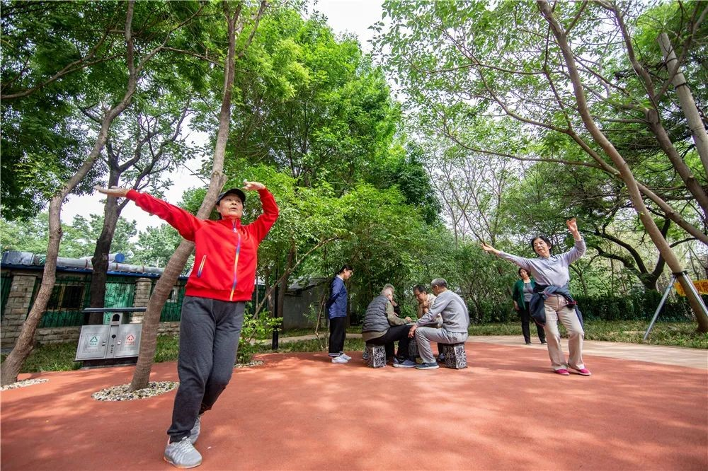幸福村位于体育馆路街道国家体育总局社区内，是被周围楼房包围的一片平房区。原先这里灌木杂草丛生，夏季蚊虫滋生，秋冬季枯枝枯草堆放，存在极大的安全隐患，影响居民的生活环境。经街巷长入户了解情况、居委会收集民意，体育馆路街道统筹安排，将这一区域列入今年“疏解整治促提升”的重点，制定整改方案，并快速实施。在反复踏勘、论证以及征求居民意见之后，街道决定原地建一个口袋公园。在保留原有绿植的基础上，增添灌木和绣球、二月兰等花朵，不仅让原本单一的绿植有层次感，还让口袋公园百花齐放。
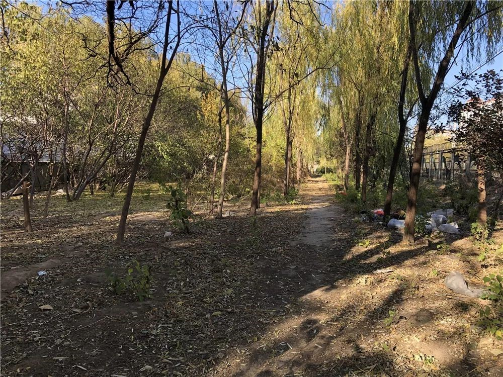整治前
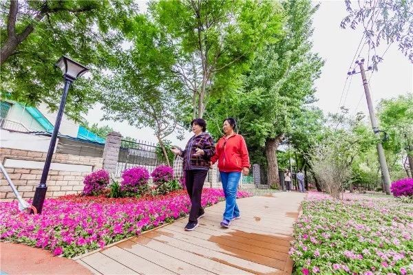整治后
除了增添新的绿植美化环境外，工作人员还根据居民需求，设置了健身区、休闲娱乐区，可以散步赏景、运动健身、约三五好友打牌下棋。
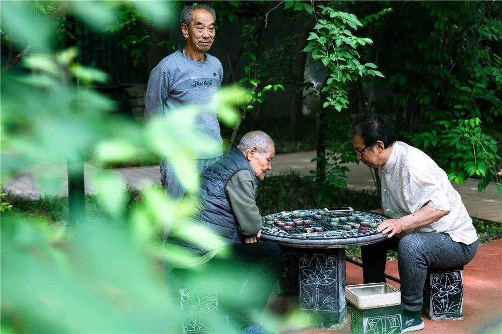 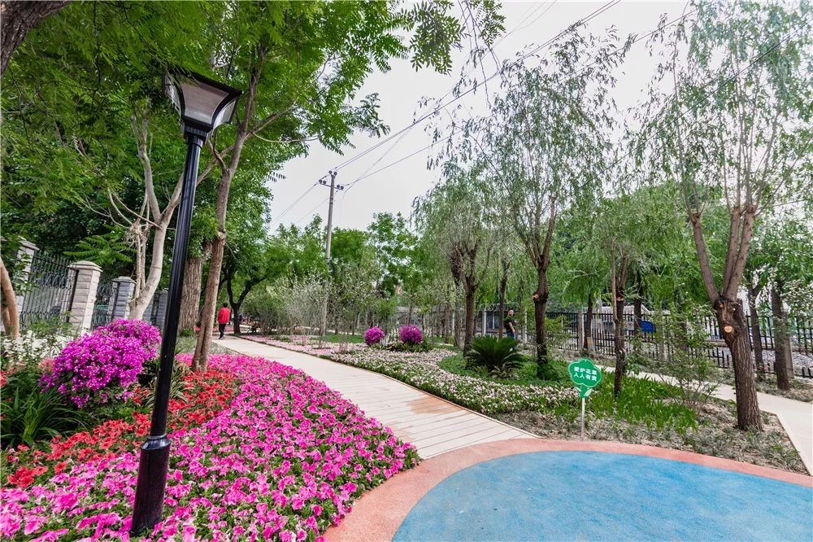 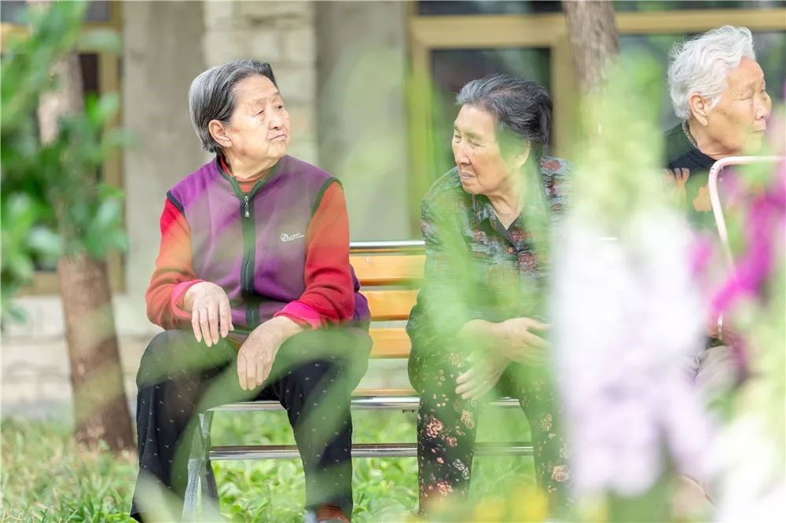为了保障口袋公园与地区建设风格的一致性，公园内所有道路均为木栈道。此外，由于口袋公园紧邻养老照料中心，为便于老人出行，还铺设了通往养老照料中心的步道。
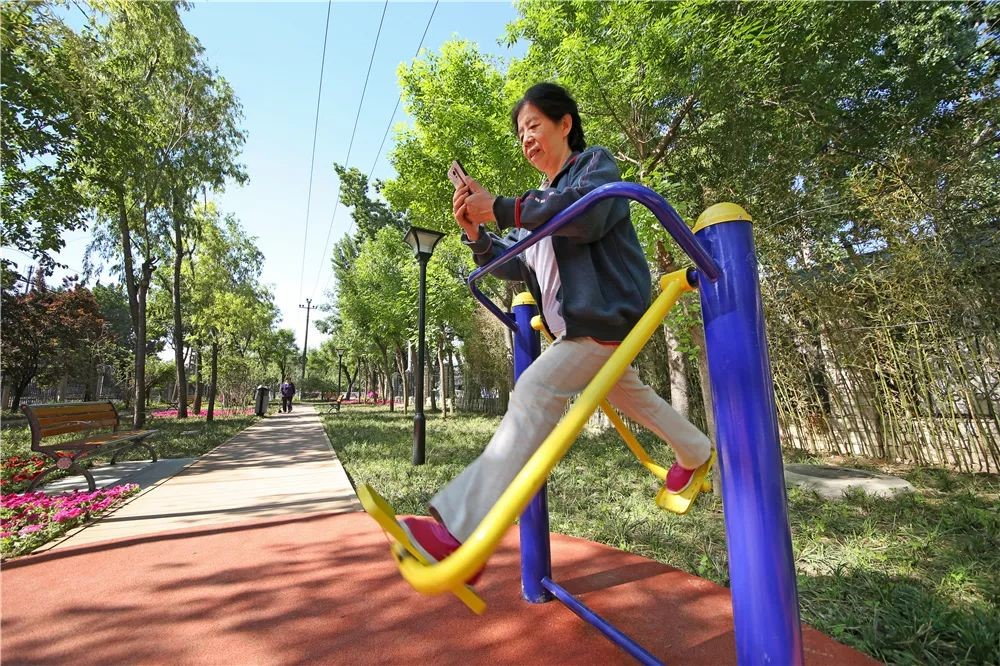 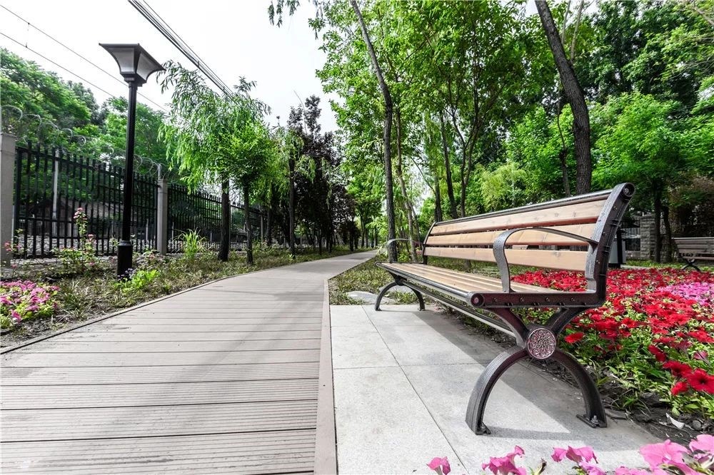
据街道工作人员介绍，“在公园门口，我们设立了栏杆，禁止电动车和自行车驶入，保障居民的活动空间和安全。”此外，为保障公园环境，后期将交付平房物业进行维护。平房物业将配备保安、保洁及绿化人员，清理公园卫生并对绿植进行养护。同时，幸福村的小巷管家也将积极参与到公园的维护中，共建共享美好家园。
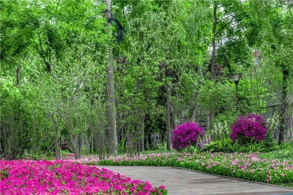 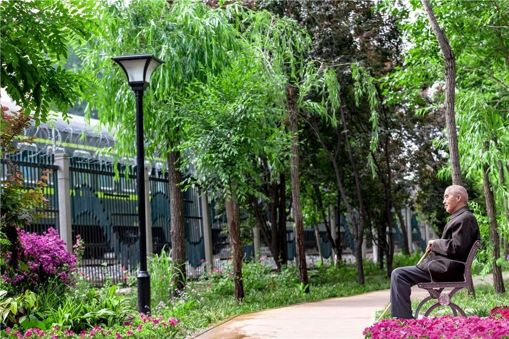据了解，幸福公园是体育馆路街道今年“疏解整治促提升”工作修建完成的第二个口袋公园，下一步，街道将加强对疏解腾退地、边角地的利用，建设小微绿地，设置花箱、花池、花架，由平面到立体见缝插绿、多元增绿，提升地区环境水平。
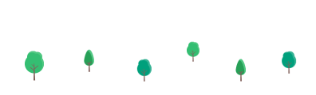